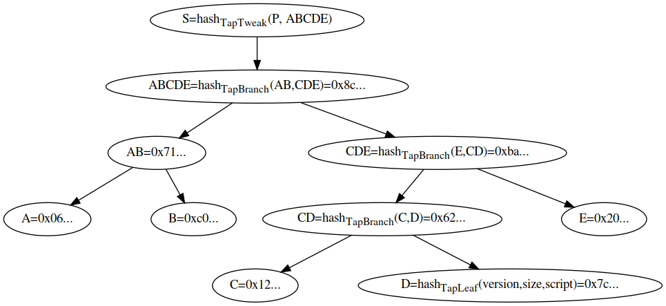

BIP 341
Introduction
Abstract
This document proposes a new SegWit version 1 output type, with spending rules based on Taproot, Schnorr signatures, and Merkle branches.
Copyright
This document is licensed under the 3-clause BSD license.
Motivation
This proposal aims to improve privacy, efficiency, and flexibility of Bitcoin’s scripting capabilities without adding new security assumptionsWhat does not adding security assumptions mean? Unforgeability of signatures is a necessary requirement to prevent theft. At least when treating script execution as a digital signature scheme itself, unforgeability can be proven in the Random Oracle Model assuming the Discrete Logarithm problem is hard. A proof for unforgeability of ECDSA in the current script system needs non-standard assumptions on top of that. Note that it is hard in general to model exactly what security for script means, as it depends on the policies and protocols used by wallet software.. Specifically, it seeks to minimize how much information about the spendability conditions of a transaction output is revealed on chain at creation or spending time and to add a number of upgrade mechanisms, while fixing a few minor but long-standing issues.
Design
A number of related ideas for improving Bitcoin’s scripting capabilities have been previously proposed: Schnorr signatures (BIP340), Merkle branches (“MAST”, BIP114, BIP117), new sighash modes (BIP118), new opcodes like CHECKSIGFROMSTACK, Taproot, Graftroot, G’root, and cross-input aggregation.
Combining all these ideas in a single proposal would be an extensive change, be hard to review, and likely miss new discoveries that otherwise could have been made along the way. Not all are equally mature as well. For example, cross-input aggregation interacts in complex ways with upgrade mechanisms, and solutions to that are still in flux. On the other hand, separating them all into independent upgrades would reduce the efficiency and privacy gains to be had, and wallet and service providers may not be inclined to go through many incremental updates. Therefore, we’re faced with a tradeoff between functionality and scope creep. In this design we strike a balance by focusing on the structural script improvements offered by Taproot and Merkle branches, as well as changes necessary to make them usable and efficient. For things like sighashes and opcodes we include fixes for known problems, but exclude new features that can be added independently with no downsides.
As a result we choose this combination of technologies:
- Merkle branches let us only reveal the actually executed part of the script to the blockchain, as opposed to all possible ways a script can be executed. Among the various known mechanisms for implementing this, one where the Merkle tree becomes part of the script’s structure directly maximizes the space savings, so that approach is chosen.
- Taproot on top of that lets us merge the traditionally separate pay-to-pubkey and pay-to-scripthash policies, making all outputs spendable by either a key or (optionally) a script, and indistinguishable from each other. As long as the key-based spending path is used for spending, it is not revealed whether a script path was permitted as well, resulting in space savings and an increase in scripting privacy at spending time.
- Taproot’s advantages become apparent under the assumption that most applications involve outputs that could be spent by all parties agreeing. That’s where Schnorr signatures come in, as they permit key aggregation: a public key can be constructed from multiple participant public keys, and which requires cooperation between all participants to sign for. Such multi-party public keys and signatures are indistinguishable from their single-party equivalents. This means that with taproot most applications can use the key-based spending path, which is both efficient and private. This can be generalized to arbitrary M-of-N policies, as Schnorr signatures support threshold signing, at the cost of more complex setup protocols.
- As Schnorr signatures also permit batch validation, allowing multiple signatures to be validated together more efficiently than validating each one independently, we make sure all parts of the design are compatible with this.
- Where unused bits appear as a result of the above changes,
they are reserved for mechanisms for future
extensions. As a result, every script in the Merkle tree
has an associated version such that new script versions can be
introduced with a soft fork while remaining compatible with BIP
341. Additionally, future soft forks can make use of the currently
unused
annexin the witness (see Rationale). - While the core semantics of the signature hashing algorithm are not changed, a number of improvements are included in this proposal. The new signature hashing algorithm fixes the verification capabilities of offline signing devices by including amount and scriptPubKey in the signature message, avoids unnecessary hashing, uses tagged hashes and defines a default sighash byte.
- The public key is directly included in the output in contrast to typical earlier constructions which store a hash of the public key or script in the output. This has the same cost for senders and is more space efficient overall if the key-based spending path is taken. Why is the public key directly included in the output? While typical earlier constructions store a hash of a script or a public key in the output, this is rather wasteful when a public key is always involved. To guarantee batch verifiability, the public key must be known to every verifier, and thus only revealing its hash as an output would imply adding an additional 32 bytes to the witness. Furthermore, to maintain 128-bit collision security for outputs, a 256-bit hash would be required anyway, which is comparable in size (and thus in cost for senders) to revealing the public key directly. While the usage of public key hashes is often said to protect against ECDLP breaks or quantum computers, this protection is very weak at best: transactions are not protected while being confirmed, and a very large portion of the currency’s supply is not under such protection regardless. Actual resistance to such systems can be introduced by relying on different cryptographic assumptions, but this proposal focuses on improvements that do not change the security model.
Informally, the resulting design is as follows: a new witness version is added (version 1), whose programs consist of 32-byte encodings of points Q. Q is computed as P + hash(P||m)G for a public key P, and the root m of a Merkle tree whose leaves consist of a version number and a script. These outputs can be spent directly by providing a signature for Q, or indirectly by revealing P, the script and leaf version, inputs that satisfy the script, and a Merkle path that proves Q committed to that leaf. All hashes in this construction (the hash for computing Q from P, the hashes inside the Merkle tree’s inner nodes, and the signature hashes used) are tagged to guarantee domain separation.
Specification
This section specifies the Taproot consensus rules. Validity is defined by exclusion: a block or transaction is valid if no condition exists that marks it failed.
The notation below follows that of BIP340. This includes the hashtag(x) notation to refer to SHA256(SHA256(tag) || SHA256(tag) || x). To the best of the authors’ knowledge, no existing use of SHA256 in Bitcoin feeds it a message that starts with two single SHA256 outputs, making collisions between hashtag with other hashes extremely unlikely.
Script validation rules
A Taproot output is a native SegWit output (see BIP141) with version number 1, and a 32-byte witness program. The following rules only apply when such an output is being spent. Any other outputs, including version 1 outputs with lengths other than 32 bytes, or P2SH-wrapped version 1 outputsWhy is P2SH-wrapping not supported? Using P2SH-wrapped outputs only provides 80-bit collision security due to the use of a 160-bit hash. This is considered low, and becomes a security risk whenever the output includes data from more than a single party (public keys, hashes, …)., remain unencumbered.
- Let q be the 32-byte array containing the witness program (the second push in the scriptPubKey) which represents a public key according to BIP340.
- Fail if the witness stack has 0 elements.
- If there are at least two witness elements, and the first byte
of the last element is 0x50Why is the first byte of the
annex
0x50? The0x50is chosen as it could not be confused with a valid P2WPKH or P2WSH spending. As the control block’s initial byte’s lowest bit is used to indicate the parity of the public key’s Y coordinate, each leaf version needs an even byte value and the immediately following odd byte value that are both not yet used in P2WPKH or P2WSH spending. To indicate the annex, only an “unpaired” available byte is necessary like0x50. This choice maximizes the available options for future script versions., this last element is called annex aWhat is the purpose of the annex? The annex is a reserved space for future extensions, such as indicating the validation costs of computationally expensive new opcodes in a way that is recognizable without knowing the scriptPubKey of the output being spent. Until the meaning of this field is defined by another softfork, users SHOULD NOT includeannexin transactions, or it may lead to PERMANENT FUND LOSS. and is removed from the witness stack. The annex (or the lack of thereof) is always covered by the signature and contributes to transaction weight, but is otherwise ignored during taproot validation. - If there is exactly one element left in the witness stack, key
path spending is used:
- The single witness stack element is interpreted as the signature and must be valid (see the next section) for the public key q (see the next subsection).
- If there are at least two witness elements left, script path
spending is used:
- Call the second-to-last stack element s, the script.
- The last stack element is called the control block c, and must have length 33 + 32m, for a value of m that is an integer between 0 and 128Why is the Merkle path length limited to 128? The optimally space-efficient Merkle tree can be constructed based on the probabilities of the scripts in the leaves, using the Huffman algorithm. This algorithm will construct branches with lengths approximately equal to log2(1/probability), but to have branches longer than 128 you would need to have scripts with an execution chance below 1 in 2128. As that is our security bound, scripts that truly have such a low chance can probably be removed entirely., inclusive. Fail if it does not have such a length.
- Let p = c[1:33] and let P = lift_x(int(p)) where lift_x and [:] are defined as in BIP340. Fail if this point is not on the curve.
- Let v = c[0] & 0xfe and call it the leaf versionWhat constraints are there on the leaf version? First, the leaf version cannot be odd as c[0] & 0xfe will always be even, and cannot be 0x50 as that would result in ambiguity with the annex. In addition, in order to support some forms of static analysis that rely on being able to identify script spends without access to the output being spent, it is recommended to avoid using any leaf versions that would conflict with a valid first byte of either a valid P2WPKH pubkey or a valid P2WSH script (that is, both v and v | 1 should be an undefined, invalid or disabled opcode or an opcode that is not valid as the first opcode). The values that comply to this rule are the 32 even values between 0xc0 and 0xfe and also 0x66, 0x7e, 0x80, 0x84, 0x96, 0x98, 0xba, 0xbc, 0xbe. Note also that this constraint implies that leaf versions should be shared amongst different witness versions, as knowing the witness version requires access to the output being spent..
- Let k0 = hashTapLeaf(v || compact_size(size of s) || s); also call it the tapleaf hash.
- For j in [0,1,…,m-1]:
- Let ej = c[33+32j:65+32j].
- Let kj+1 depend on whetherkj
< ej’’ (lexicographically)Why are child
elements sorted before hashing in the Merkle tree? By
doing so, it is not necessary to reveal the left/right directions
along with the hashes in revealed Merkle branches. This is
possible because we do not actually care about the position of
specific scripts in the tree; only that they are actually
committed to.:
- If kj < ej: kj+1 = hashTapBranch(kj || ej)Why not use a more efficient hash construction for inner Merkle nodes? The chosen construction does require two invocations of the SHA256 compression functions, one of which can be avoided in theory (see BIP98). However, it seems preferable to stick to constructions that can be implemented using standard cryptographic primitives, both for implementation simplicity and analyzability. If necessary, a significant part of the second compression function can be optimized out by specialization for 64-byte inputs..
- If kj ≥ ej: kj+1 = hashTapBranch(ej || kj).
- Let t = hashTapTweak(p || km).
- If t ≥ 0xFFFFFFFF FFFFFFFF FFFFFFFF FFFFFFFE BAAEDCE6 AF48A03B BFD25E8C D0364141 (order of secp256k1), fail.
- Let Q = P + int(t)G.
- If q ≠ x(Q) or c[0] & 1 ≠ y(Q) mod 2, failWhy is it necessary to reveal a bit in a script path spend and check that it matches the parity of the Y coordinate of Q? The parity of the Y coordinate is necessary to lift the X coordinate q to a unique point. While this is not strictly necessary for verifying the taproot commitment as described above, it is necessary to allow batch verification. Alternatively, Q could be forced to have an even Y coordinate, but that would require retrying with different internal public keys (or different messages) until Q has that property. There is no downside to adding the parity bit because otherwise the control block bit would be unused..
- Execute the script, according to the applicable script rulesWhat are the applicable script rules in script path spends? BIP342 specifies validity rules that apply for leaf version 0xc0, but future proposals can introduce rules for other leaf versions., using the witness stack elements excluding the script s, the control block c, and the annex a if present, as initial stack. This implies that for the future leaf versions (non-0xC0) the execution must succeed.Why we need to success on future leaf version validation This is required to enable future leaf versions as soft forks.
q is referred to as taproot output key and p as taproot internal key.
Signature validation rules
We first define a reusable common signature message calculation function, followed by the actual signature validation as it’s used in key path spending.
Common signature message
The function SigMsg(hash_type, ext_flag) computes the common portion of the message being signed as a byte array. It is implicitly also a function of the spending transaction and the outputs it spends, but these are not listed to keep notation simple.
The parameter hash_type is an 8-bit unsigned value.
The SIGHASH encodings from the legacy script system
are reused, including SIGHASH_ALL,
SIGHASH_NONE, SIGHASH_SINGLE, and
SIGHASH_ANYONECANPAY. We define a new
hashtype SIGHASH_DEFAULT (value
0x00) which results in signing over the whole transaction
just as for SIGHASH_ALL. The following restrictions
apply, which cause validation failure if violated:
- Using any undefined hash_type (not 0x00, 0x01, 0x02, 0x03, 0x81, 0x82, or 0x83Why reject unknown hash_type values? By doing so, it is easier to reason about the worst case amount of signature hashing an implementation with adequate caching must perform.).
- Using
SIGHASH_SINGLEwithout a “corresponding output” (an output with the same index as the input being verified).
The parameter ext_flag is an integer in range 0-127, and is used for indicating (in the message) that extensions are appended to the output of SigMsg()What extensions use the ext_flag mechanism? BIP342 reuses the same common signature message algorithm, but adds BIP342-specific data at the end, which is indicated using ext_flag = 1..
If the parameters take acceptable values, the message is the concatenation of the following data, in order (with byte size of each item listed in parentheses). Numerical values in 2, 4, or 8-byte are encoded in little-endian.
- Control:
- hash_type (1).
- Transaction data:
- nVersion (4): the nVersion of the transaction.
- nLockTime (4): the nLockTime of the transaction.
- If the hash_type & 0x80 does not equal
SIGHASH_ANYONECANPAY:- sha_prevouts (32): the SHA256 of the serialization of all input outpoints.
- sha_amounts (32): the SHA256 of the serialization of all input amounts.
- sha_scriptpubkeys (32): the SHA256 of all spent
outputs’ scriptPubKeys, serialized as script inside
CTxOut. - sha_sequences (32): the SHA256 of the serialization of all input nSequence.
- If hash_type & 3 does not equal
SIGHASH_NONEorSIGHASH_SINGLE:- sha_outputs (32): the SHA256 of the serialization of
all outputs in
CTxOutformat.
- sha_outputs (32): the SHA256 of the serialization of
all outputs in
- Data about this input:
- spend_type (1): equal to (ext_flag * 2) + annex_present, where annex_present is 0 if no annex is present, or 1 otherwise (the original witness stack has two or more witness elements, and the first byte of the last element is 0x50)
- If hash_type & 0x80 equals
SIGHASH_ANYONECANPAY:- outpoint (36): the
COutPointof this input (32-byte hash + 4-byte little-endian). - amount (8): value of the previous output spent by this input.
- scriptPubKey (35): scriptPubKey of the
previous output spent by this input, serialized as script inside
CTxOut. Its size is always 35 bytes. - nSequence (4): nSequence of this input.
- outpoint (36): the
- If hash_type & 0x80 does not equal
SIGHASH_ANYONECANPAY:- input_index (4): index of this input in the transaction input vector. Index of the first input is 0.
- If an annex is present (the lowest bit of spend_type
is set):
- sha_annex (32): the SHA256 of (compact_size(size of annex) || annex), where annex includes the mandatory 0x50 prefix.
- Data about this output:
- If hash_type & 3 equals
SIGHASH_SINGLE:- sha_single_output (32): the SHA256 of the
corresponding output in
CTxOutformat.
- sha_single_output (32): the SHA256 of the
corresponding output in
- If hash_type & 3 equals
The total length of SigMsg() is at most 206 bytesWhat is the output length of SigMsg()? The total length of SigMsg() can be computed using the following formula: 174 - is_anyonecanpay * 49 - is_none * 32 + has_annex * 32.. Note that this does not include the size of sub-hashes such as sha_prevouts, which may be cached across signatures of the same transaction.
In summary, the semantics of the BIP143 sighash types remain unchanged, except the following:
- The way and order of serialization is changed.Why is
the serialization in the signature message changed?
Hashes that go into the signature message and the message itself
are now computed with a single SHA256 invocation instead of double
SHA256. There is no expected security improvement by doubling
SHA256 because this only protects against length-extension attacks
against SHA256 which are not a concern for signature messages
because there is no secret data. Therefore doubling SHA256 is a
waste of resources. The message computation now follows a logical
order with transaction level data first, then input data and
output data. This allows to efficiently cache the transaction part
of the message across different inputs using the SHA256 midstate.
Additionally, sub-hashes can be skipped when calculating the
message (for example `sha_prevouts` if
SIGHASH_ANYONECANPAYis set) instead of setting them to zero and then hashing them as in BIP143. Despite that, collisions are made impossible by committing to the length of the data (implicit in hash_type and spend_type) before the variable length data. - The signature message commits to the scriptPubKey of
the spent output and if the
SIGHASH_ANYONECANPAYflag is not set, the message commits to the scriptPubKeys of all outputs spent by the transaction. Why does the signature message commit to the scriptPubKey? This prevents lying to offline signing devices about output being spent, even when the actually executed script (scriptCode in BIP143) is correct. This means it’s possible to compactly prove to a hardware wallet what (unused) execution paths existed. Moreover, committing to all spent scriptPubKeys helps offline signing devices to determine the subset that belong to its own wallet. This is useful in automated coinjoins.. - If the
SIGHASH_ANYONECANPAYflag is not set, the message commits to the amounts of all transaction inputs.Why does the signature message commit to the amounts of all transaction inputs? This eliminates the possibility to lie to offline signing devices about the fee of a transaction. - The signature message commits to all input nSequence
if
SIGHASH_NONEorSIGHASH_SINGLEare set (unlessSIGHASH_ANYONECANPAYis set as well).Why does the signature message commit to all input nSequence ifSIGHASH_SINGLEorSIGHASH_NONEare set? Because setting them already makes the message commit to theprevoutspart of all transaction inputs, it is not useful to treat the nSequence any different. Moreover, this change makes nSequence consistent with the view thatSIGHASH_SINGLEandSIGHASH_NONEonly modify the signature message with respect to transaction outputs and not inputs. - The signature message includes commitments to the taproot-specific data spend_type and annex (if present).
Taproot key path spending signature validation
A Taproot signature is a 64-byte Schnorr signature, as defined in BIP340, with the sighash byte appended in the usual Bitcoin fashion. This sighash byte is optional. If omitted, the resulting signatures are 64 bytes, and a SIGHASH_DEFAULT mode is implied.
To validate a signature sig with public key q:
- If the sig is 64 bytes long, return Verify(q, hashTapSighash(0x00 || SigMsg(0x00, 0)), sig)Why is the input to hashTapSighash prefixed with 0x00? This prefix is called the sighash epoch, and allows reusing the hashTapSighash tagged hash in future signature algorithms that make invasive changes to how hashing is performed (as opposed to the ext_flag mechanism that is used for incremental extensions). An alternative is having them use a different tag, but supporting a growing number of tags may become undesirable., where Verify is defined in BIP340.
- If the sig is 65 bytes long, return sig[64] ≠
0x00Why can the
hash_typenot be0x00in 65-byte signatures? Permitting that would enable malleating (by third parties, including miners) 64-byte signatures into 65-byte ones, resulting in a different `wtxid` and a different fee rate than the creator intended. and Verify(q, hashTapSighash(0x00 || SigMsg(sig[64], 0)), sig[0:64]). - Otherwise, failWhy permit two signature
lengths? By making the most common type of
hash_typeimplicit, a byte can often be saved..
Constructing and spending Taproot outputs
This section discusses how to construct and spend Taproot outputs. It only affects wallet software that chooses to implement receiving and spending, and is not consensus critical in any way.
Conceptually, every Taproot output corresponds to a combination of a single public key condition (the internal key), and zero or more general conditions encoded in scripts organized in a tree. Satisfying any of these conditions is sufficient to spend the output.
Initial steps The first step is determining what the internal key and the organization of the rest of the scripts should be. The specifics are likely application dependent, but here are some general guidelines:
- When deciding between scripts with conditionals
(
OP_IFetc.) and splitting them up into multiple scripts (each corresponding to one execution path through the original script), it is generally preferable to pick the latter. - When a single condition requires signatures with multiple keys, key aggregation techniques like MuSig can be used to combine them into a single key. The details are out of scope for this document, but note that this may complicate the signing procedure.
- If one or more of the spending conditions consist of just a single key (after aggregation), the most likely one should be made the internal key. If no such condition exists, it may be worthwhile adding one that consists of an aggregation of all keys participating in all scripts combined; effectively adding an “everyone agrees” branch. If that is inacceptable, pick as internal key a “Nothing Up My Sleeve” (NUMS) point, i.e., a point with unknown discrete logarithm. One example of such a point is H = lift_x(0x50929b74c1a04954b78b4b6035e97a5e078a5a0f28ec96d547bfee9ace803ac0) which is constructed by taking the hash of the standard uncompressed encoding of the secp256k1 base point G as X coordinate. In order to avoid leaking the information that key path spending is not possible it is recommended to pick a fresh integer r in the range 0…n-1 uniformly at random and use H + rG as internal key. It is possible to prove that this internal key does not have a known discrete logarithm with respect to G by revealing r to a verifier who can then reconstruct how the internal key was created.
- If the spending conditions do not require a script path, the output key should commit to an unspendable script path instead of having no script path. This can be achieved by computing the output key point as Q = P + int(hashTapTweak(bytes(P)))G. Why should the output key always have a taproot commitment, even if there is no script path?
If the taproot output key is an aggregate of keys, there is the possibility for a malicious party to add a script path without being noticed by the other parties. This allows to bypass the multiparty policy and to steal the coin. MuSig key aggregation does not have this issue because it already causes the internal key to be randomized.
The attack works as follows: Assume Alice and Mallory want to aggregate their keys into a taproot output key without a script path. In order to prevent key cancellation and related attacks they use MSDL-pop instead of MuSig. The MSDL-pop protocol requires all parties to provide a proof of possession of their corresponding secret key and the aggregated key is just the sum of the individual keys. After Mallory receives Alice’s key A, Mallory creates M = M0 + int(t)G where M0 is Mallory’s original key and t allows a script path spend with internal key P = A + M0 and a script that only contains Mallory’s key. Mallory sends a proof of possession of M to Alice and both parties compute output key Q = A + M = P + int(t)G. Alice will not be able to notice the script path, but Mallory can unilaterally spend any coin with output key Q.
- The remaining scripts should be organized into the leaves of a binary tree. This can be a balanced tree if each of the conditions these scripts correspond to are equally likely. If probabilities for each condition are known, consider constructing the tree as a Huffman tree.
Computing the output script Once the spending
conditions are split into an internal key
internal_pubkey and a binary tree whose leaves are
(leaf_version, script) tuples, the output script can be computed
using the Python3 algorithms below. These algorithms take
advantage of helper functions from the
BIP340
reference code for integer conversion, point multiplication,
and tagged hashes.
First, we define taproot_tweak_pubkey for 32-byte
BIP340
public key arrays. The function returns a bit indicating the
tweaked public key’s Y coordinate as well as the public key byte
array. The parity bit will be required for spending the output
with a script path. In order to allow spending with the key path,
we define taproot_tweak_seckey to compute the secret
key for a tweaked public key. For any byte string h
it holds that
taproot_tweak_pubkey(pubkey_gen(seckey), h)[1] == pubkey_gen(taproot_tweak_seckey(seckey, h)).
Note that because tweaks are applied to 32-byte public keys, `taproot_tweak_seckey` may need to negate the secret key before applying the tweak.
def taproot_tweak_pubkey(pubkey, h):
t = int_from_bytes(tagged_hash("TapTweak", pubkey + h))
if t >= SECP256K1_ORDER:
raise ValueError
P = lift_x(int_from_bytes(pubkey))
if P is None:
raise ValueError
Q = point_add(P, point_mul(G, t))
return 0 if has_even_y(Q) else 1, bytes_from_int(x(Q))
def taproot_tweak_seckey(seckey0, h):
seckey0 = int_from_bytes(seckey0)
P = point_mul(G, seckey0)
seckey = seckey0 if has_even_y(P) else SECP256K1_ORDER - seckey0
t = int_from_bytes(tagged_hash("TapTweak", bytes_from_int(x(P)) + h))
if t >= SECP256K1_ORDER:
raise ValueError
return bytes_from_int((seckey + t) % SECP256K1_ORDER)The following function, taproot_output_script,
returns a byte array with the scriptPubKey (see
BIP141).
ser_script refers to a function that prefixes its
input with a CompactSize-encoded length.
def taproot_tree_helper(script_tree):
if isinstance(script_tree, tuple):
leaf_version, script = script_tree
h = tagged_hash("TapLeaf", bytes([leaf_version]) + ser_script(script))
return ([((leaf_version, script), bytes())], h)
left, left_h = taproot_tree_helper(script_tree[0])
right, right_h = taproot_tree_helper(script_tree[1])
ret = [(l, c + right_h) for l, c in left] + [(l, c + left_h) for l, c in right]
if right_h < left_h:
left_h, right_h = right_h, left_h
return (ret, tagged_hash("TapBranch", left_h + right_h))
def taproot_output_script(internal_pubkey, script_tree):
"""Given a internal public key and a tree of scripts, compute the output script.
script_tree is either:
- a (leaf_version, script) tuple (leaf_version is 0xc0 for [[bip-0342.mediawiki|BIP342]] scripts)
- a list of two elements, each with the same structure as script_tree itself
- None
"""
if script_tree is None:
h = bytes()
else:
_, h = taproot_tree_helper(script_tree)
_, output_pubkey = taproot_tweak_pubkey(internal_pubkey, h)
return bytes([0x51, 0x20]) + output_pubkey
To spend this output using script D, the control block would contain the following data in this order:
<control byte with leaf version and parity bit> <internal key p> <C> <E> <AB>
The TapTweak would then be computed as described above like so:
D = tagged_hash("TapLeaf", bytes([leaf_version]) + ser_script(script))
CD = tagged_hash("TapBranch", C + D)
CDE = tagged_hash("TapBranch", E + CD)
ABCDE = tagged_hash("TapBranch", AB + CDE)
TapTweak = tagged_hash("TapTweak", p + ABCDE)Spending using the key path A Taproot output
can be spent with the secret key corresponding to the
internal_pubkey. To do so, a witness stack consists
of a single element: a
BIP340
signature on the signature hash as defined above, with the secret
key tweaked by the same h as in the above snippet.
See the code below:
def taproot_sign_key(script_tree, internal_seckey, hash_type, bip340_aux_rand):
if script_tree is None:
h = bytes()
else:
_, h = taproot_tree_helper(script_tree)
output_seckey = taproot_tweak_seckey(internal_seckey, h)
sig = schnorr_sign(sighash(hash_type), output_seckey, bip340_aux_rand)
if hash_type != 0:
sig += bytes([hash_type])
return [sig]This function returns the witness stack necessary and a
sighash function to compute the signature hash as
defined above (for simplicity, the snippet above ignores passing
information like the transaction, the input position, … to the
sighashing code).
Spending using one of the scripts A Taproot output can be spent by satisfying any of the scripts used in its construction. To do so, a witness stack consisting of the script’s inputs, plus the script itself and the control block are necessary. See the code below:
def taproot_sign_script(internal_pubkey, script_tree, script_num, inputs):
info, h = taproot_tree_helper(script_tree)
(leaf_version, script), path = info[script_num]
output_pubkey_y_parity, _ = taproot_tweak_pubkey(internal_pubkey, h)
pubkey_data = bytes([output_pubkey_y_parity + leaf_version]) + internal_pubkey
return inputs + [script, pubkey_data + path]Security
Taproot improves the privacy of Bitcoin because instead of revealing all possible conditions for spending an output, only the satisfied spending condition has to be published. Ideally, outputs are spent using the key path which prevents observers from learning the spending conditions of a coin. A key path spend could be a “normal” payment from a single- or multi-signature wallet or the cooperative settlement of hidden multiparty contract.
A script path spend leaks that there is a script path and that the key path was not applicable - for example because the involved parties failed to reach agreement. Moreover, the depth of a script in the Merkle root leaks information including the minimum depth of the tree, which suggests specific wallet software that created the output and helps clustering. Therefore, the privacy of script spends can be improved by deviating from the optimal tree determined by the probability distribution over the leaves.
Just like other existing output types, taproot outputs should never reuse keys, for privacy reasons. This does not only apply to the particular leaf that was used to spend an output but to all leaves committed to in the output. If leaves were reused, it could happen that spending a different output would reuse the same Merkle branches in the Merkle proof. Using fresh keys implies that taproot output construction does not need to take special measures to randomizing leaf positions because they are already randomized due to the branch-sorting Merkle tree construction used in taproot. This does not avoid leaking information through the leaf depth and therefore only applies to balanced (sub-) trees. In addition, every leaf should have a set of keys distinct from every other leaf. The reason for this is to increase leaf entropy and prevent an observer from learning an undisclosed script using brute-force search.
Test vectors
Test vectors for wallet operation (scriptPubKey computation, key path spending, control block construction) can be found here. It consists of two sets of vectors.
- The first “scriptPubKey” tests concern computing the
scriptPubKey and (mainnet) BIP350 address given an internal public
key, and a script tree. The script tree is encoded as
nullto represent no scripts, a JSON object to represent a leaf node, or a 2-element array to represent an inner node. The control blocks needed for script path spending are also provided for each of the script leaves. - The second “keyPathSpending” tests consists of a list of test cases, each of which provides an unsigned transaction and the UTXOs it spends. For each of its BIP341 inputs, the internal private key and the Merkle root it was derived from is given, as well as the expected witness to spend it. All signatures are created with an all-zero (0x0000…0000) BIP340 auxiliary randomness array.
- In all cases, hexadecimal values represent byte arrays, not numbers. In particular, that means that provided hash values have the hex digits corresponding to the first bytes first. This differs from the convention used for txids and block hashes, where the hex strings represent numbers, resulting in a reversed order.
Validation test vectors used in the Bitcoin Core unit test framework can be found here.
Rationale
Deployment
This BIP is deployed concurrently with BIP342.
For Bitcoin signet, these BIPs are always active.
For Bitcoin mainnet and testnet3, these BIPs are deployed by “version bits” with the name “taproot” and bit 2, using BIP9 modified to use a lower threshold, with an additional min_activation_height parameter and replacing the state transition logic for the DEFINED, STARTED and LOCKED_IN states as follows:
case DEFINED:
if (GetMedianTimePast(block.parent) >= starttime) {
return STARTED;
}
return DEFINED;
case STARTED:
int count = 0;
walk = block;
for (i = 0; i < 2016; i++) {
walk = walk.parent;
if ((walk.nVersion & 0xE0000000) == 0x20000000 && ((walk.nVersion >> bit) & 1) == 1) {
count++;
}
}
if (count >= threshold) {
return LOCKED_IN;
} else if (GetMedianTimePast(block.parent) >= timeout) {
return FAILED;
}
return STARTED;
case LOCKED_IN:
if (block.nHeight < min_activation_height) {
return LOCKED_IN;
}
return ACTIVE;
For Bitcoin mainnet, the starttime is epoch timestamp 1619222400 (midnight 24 April 2021 UTC), timeout is epoch timestamp 1628640000 (midnight 11 August 2021 UTC), the threshold is 1815 blocks (90%) instead of 1916 blocks (95%), and the min_activation_height is block 709632. The deployment did activate at height 709632 on Bitcoin mainnet.
For Bitcoin testnet3, the starttime is epoch timestamp 1619222400 (midnight 24 April 2021 UTC), timeout is epoch timestamp 1628640000 (midnight 11 August 2021 UTC), the threshold is 1512 blocks (75%), and the min_activation_height is block 0. The deployment did activate at height 2011968 on Bitcoin testnet3.
Backwards compatibility
As a soft fork, older software will continue to operate without modification. Non-upgraded nodes, however, will consider all SegWit version 1 witness programs as anyone-can-spend scripts. They are strongly encouraged to upgrade in order to fully validate the new programs.
Non-upgraded wallets can receive and send bitcoin from non-upgraded and upgraded wallets using SegWit version 0 programs, traditional pay-to-pubkey-hash, etc. Depending on the implementation non-upgraded wallets may be able to send to Segwit version 1 programs if they support sending to BIP350 Bech32m addresses.
Acknowledgements
This document is the result of discussions around script and signature improvements with many people, and had direct contributions from Greg Maxwell and others. It further builds on top of earlier published proposals such as Taproot by Greg Maxwell, and Merkle branch constructions by Russell O’Connor, Johnson Lau, and Mark Friedenbach.
The authors wish the thank Arik Sosman for suggesting to sort Merkle node children before hashes, removing the need to transfer the position in the tree, as well as all those who provided valuable feedback and reviews, including the participants of the structured reviews.
BIP: 342
Layer: Consensus (soft fork)
Title: Validation of Taproot Scripts
Authors: Pieter Wuille <pieter.wuille@gmail.com>
Jonas Nick <jonasd.nick@gmail.com>
Anthony Towns <aj@erisian.com.au>
Status: Deployed
Type: Specification
Assigned: 2020-01-19
License: BSD-3-Clause
Discussion: 2019-05-06: https://lists.linuxfoundation.org/pipermail/bitcoin-dev/2019-May/016914.html [bitcoin-dev] Taproot proposal
Requires: 340, 341